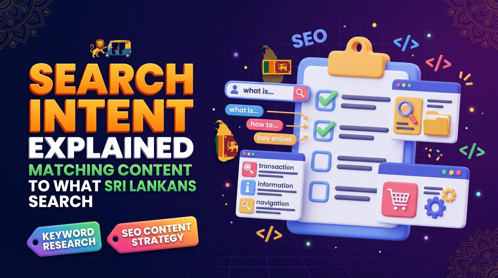

Search intent is the purpose behind a query. The four main types are informational, navigational, commercial investigation and transactional. To match it, search your target keyword on Google, see which page types rank, and build the page format that fits, whether that is a guide, comparison, service page or product page. Give each page one clear purpose and link related pages together.
- What is search intent in SEO?
- Why search intent matters for Sri Lankan businesses
- The four main types of search intent
- How search intent works in the Sri Lankan market
- How to identify search intent for a keyword
- How to match keywords with the right page type
- Common search intent mistakes to avoid
- Using search intent to build a better SEO content strategy
- How to measure whether your content matches search intent
- Search intent checklist for Sri Lankan businesses
- Conclusion: create content that matches what people need
What is search intent in SEO?
Search intent, also known as user intent, is the purpose behind a search query. It describes what a person hopes to find, learn, compare or accomplish when they use a search engine.
Someone searching "what is SEO" probably wants an explanation. Someone searching "SEO services Sri Lanka" may be comparing agencies or looking for professional help. Both queries relate to SEO, but they represent different needs.
Search engines aim to return results that satisfy the likely purpose of a query. Understanding that purpose helps you decide whether a keyword belongs on a blog article, service page, product page, category page or another type of resource.
Effective keyword research should therefore consider not only search volume and competition, but also the intent behind each keyword. Our keyword research guide for Sri Lankan businesses shows the full process.
Why search intent matters for Sri Lankan businesses
Ranking for a keyword is not enough if your page does not meet the visitor's expectations. Search intent helps businesses create relevant pages for each stage of the customer journey.
Attract more relevant visitors
A page that matches the purpose of a query is more likely to attract people interested in its content. An article explaining how POS systems work serves a different purpose from a product page offering a POS system for sale.
Improve the customer journey
Potential customers may start by learning about a problem, then compare possible solutions, and finally contact a provider or buy. Content for each stage helps visitors find the next useful step.
Reduce mismatches between keywords and pages
Targeting a transactional keyword with a general informational article may not meet the searcher's needs. Likewise, sending someone who wants a simple definition to a sales-focused landing page creates a poor experience.
Make content planning more effective
Understanding intent helps you decide which topics deserve blog articles, which need dedicated service pages and which can be handled by improving existing content. It also reduces the risk of publishing several pages that compete for the same purpose.
The four main types of search intent
Search intent is commonly grouped into four categories: informational, navigational, commercial investigation and transactional. Real queries can overlap categories, so use the search results and context to judge the most likely intent.
1. Informational intent
Informational searches happen when people want to learn something, understand a problem or find an answer. Examples relevant to Sri Lankan audiences include:
- What is SEO?
- How does a POS system work?
- How to improve website speed
- How to register a business in Sri Lanka
- What is keyword research?
Best content formats: educational articles, step-by-step guides, tutorials, FAQs, explainers and checklists.
Your goal is to answer the question clearly and accurately. Where appropriate, link readers to a related service or resource without making the article needlessly promotional.
2. Navigational intent
Navigational searches happen when people want to find a particular website, brand or online destination. Examples include:
- Google Search Console login
- A specific company's website
- A known brand's customer support page
- A business name followed by "contact"
Best content formats: clear homepages, branded landing pages, contact pages, login pages and dedicated support resources.
Make sure your own brand pages are easy to navigate and carry accurate business information. You generally cannot expect to rank for another company's navigational query just by mentioning its name in your content.
3. Commercial investigation intent
Commercial investigation happens when people are researching options before they decide. They may compare prices, features, providers, reviews or benefits. Examples include:
- Best POS system in Sri Lanka
- SEO companies in Sri Lanka
- Cloud POS vs desktop POS
- Website development company reviews
- Best accounting software for small businesses
Best content formats: comparison articles, buying guides, service pages with clear details, case studies, product comparisons and evidence-based reviews.
Help readers evaluate their options with relevant information. Avoid unsupported claims such as calling a product the best in the country without evidence. Our guide to SEO pricing in Sri Lanka is an example of content written for this stage.
4. Transactional intent
Transactional searches happen when users are ready to take a specific action, such as buying a product, requesting a quotation, booking a service or contacting a provider. Examples include:
- Buy POS system Sri Lanka
- Hire SEO consultant Sri Lanka
- SEO audit service pricing
- Order restaurant billing software
- Book website development consultation
Best content formats: service landing pages, product pages, pricing pages, booking pages, quotation forms and clear contact pages.
Make the next action straightforward. Show relevant service information, explain what customers receive, answer common questions and provide a working enquiry or purchase process. A page like our SEO specialist in Sri Lanka page is built for this intent.
How search intent works in the Sri Lankan market
Search behaviour in Sri Lanka varies by industry, location, language, device and type of customer. Investigate the terms your own audiences use rather than assuming every customer follows the same pattern.
Local service searches
A person searching for "plumber in Kurunegala" probably wants to contact a nearby provider. A search for "how to fix a leaking tap" is more likely to want instructions.
The first query is better served by a relevant local service page, the second by an educational article. If your business serves specific locations, make sure your location information is accurate and that the content gives genuine value to customers there. See our local SEO service and our Kurunegala page for an example.
Business-to-business searches
Business owners researching software, digital marketing, accounting services or website development often compare several providers before buying.
"SEO price Sri Lanka" may indicate commercial investigation, while "SEO company Sri Lanka contact" suggests a stronger intention to contact a provider. Check the exact intent against the search results and the wording of the query.
Language and search behaviour
Sri Lankan audiences search in English, Sinhala, Tamil and combinations of the three. Some mix English technical terms into Sinhala or Tamil queries, particularly when researching software and professional services.
Research the actual phrases your target customers use, and do not assume direct translations have the same search demand or intent across languages. Our guide to Sinhala, Tamil or English SEO goes deeper.
How to identify search intent for a keyword
Evaluate search intent before you decide which page to create or optimise. Use this process to understand what searchers are likely to expect.
Step 1: Search the exact keyword on Google
Enter your target keyword and review the current results. Examine the most prominent pages and identify what they have in common.
Look for blog articles, service pages, product listings, comparison guides, local business results, videos and other formats. The mix of results helps reveal the dominant intent.
Step 2: Examine the type of content ranking
If most results are educational guides, a detailed informational article is probably right. If they are mainly service providers, a commercial landing page may match better.
This is a useful indicator, not a guaranteed rule. Results can mix formats, and the best page type depends on the needs behind the query.
Step 3: Look at the questions people ask
Related searches, Google's question features, customer enquiries and relevant forums reveal extra questions. Use them to identify the information a useful page should cover.
Do not add every related question to one article. Include the questions that support the page's main purpose and answer the others on separate pages where that makes more sense.
Step 4: Consider the customer's stage
Ask whether the searcher is learning, evaluating options or ready to act. This helps you choose a suitable call to action and decide how much detail the page needs.
Step 5: Check your existing performance data
Google Search Console shows the queries that generate impressions and clicks for your pages. Review them to find mismatches between the search terms and the content currently ranking.
If a service page earns impressions for informational questions, consider whether a supporting article would satisfy that intent better. If a blog post attracts potential customers who need professional help, add a relevant contextual link to the right service page, as described in our internal linking guide.
How to match keywords with the right page type
After identifying search intent, assign each keyword or closely related keyword group to the page best suited to fulfil that need.
| Search query example | Likely intent | Recommended page type |
|---|---|---|
| What is SEO? | Informational | Educational article |
| Keyword research guide | Informational | Detailed how-to guide |
| SEO companies in Sri Lanka | Commercial investigation | Comparison or service page |
| SEO services Sri Lanka | Commercial or transactional | SEO service landing page |
| Buy POS system Sri Lanka | Transactional | Product or sales page |
| How to improve website speed | Informational | Technical tutorial |
These examples illustrate likely intent and are not verified keyword-volume or ranking data. Check the current search results before choosing a page format.
Common search intent mistakes to avoid
Targeting a keyword without checking Google results
A keyword may look commercially valuable while the current results favour informational resources. Review the results before choosing the content format.
Trying to rank one page for unrelated intents
A single page cannot always satisfy users who want a tutorial, a product comparison and a purchase option equally well. Give each page one clear primary purpose and connect related pages with internal links.
Creating multiple pages for the same search need
Several articles answering the same question in nearly identical ways create needless overlap. Review existing pages before producing new content and consolidate material where appropriate.
Ignoring commercial intent in informational content
Informational content should answer the reader's question first. When a relevant service genuinely helps with the next step, add a natural link instead of turning the whole article into a sales pitch.
Assuming search intent never changes
Search results change as user needs and search systems evolve. Revisit important keywords periodically and update your pages when the dominant intent or expected information shifts.
Using search intent to build a better SEO content strategy
Search intent is most valuable when it guides your whole content plan. Instead of publishing articles from keyword lists alone, create resources that address different customer needs and connect them logically.
Create content for different stages of the customer journey
- Awareness: explain problems, definitions and possible solutions through educational articles.
- Consideration: help readers compare approaches, services, products and features.
- Decision: provide clear service information, pricing where available, evidence and a straightforward way to enquire or buy.
These stages are a planning framework, not a strict sequence that every customer follows.
Connect supporting articles to service pages
When an informational article introduces a topic related to one of your services, add a relevant internal link that helps interested readers go further.
An article about keyword selection can link to a keyword research service page, and a guide to content planning can send readers to your content strategy resource. These links create a more useful experience and help visitors move between related pages.
Plan topics around search intent
Before publishing an article, define its target audience, primary query, likely intent and purpose. Then identify the questions it should answer and the related pages it should link to. Our SEO content calendar guide shows how to schedule this work realistically.
For practical guidance on finding valuable search terms, visit our keyword research resource. To turn your findings into a structured publishing plan, explore our SEO content strategy resource, and make sure every page is optimised using our on-page SEO checklist.
How to measure whether your content matches search intent
After publishing or updating a page, review its performance over time. Use several indicators instead of relying on a single ranking or engagement metric.
- Search impressions: check whether the page appears for relevant queries.
- Organic clicks: monitor visits generated by search results.
- Query relevance: check whether the terms generating impressions match the page's purpose.
- Engagement: review whether visitors use the page and continue to relevant resources.
- Conversions: measure meaningful outcomes such as enquiries, purchases or consultation bookings.
Low engagement does not automatically mean the search intent is wrong, and high engagement does not guarantee strong rankings. Consider the page's purpose, traffic source, device experience, content quality and conversion data together.
If a page receives impressions for relevant queries but few clicks, check whether the title and description communicate its value; our title tags and meta descriptions guide explains how. If visitors arrive but do not find what they need, improve the content and navigation.
Search intent checklist for Sri Lankan businesses
- Identify the primary keyword and the audience searching for it.
- Review current Google results for the target query.
- Decide whether the dominant intent is informational, navigational, commercial or transactional.
- Choose a page format that matches the searcher's needs.
- Answer the main question or fulfil the primary task clearly.
- Use relevant examples that reflect your customers and market.
- Assign closely related keywords to an appropriate page.
- Check existing content to avoid needless duplication.
- Add relevant internal links to supporting guides and service pages.
- Review search performance and conversions after publication.
Conclusion: create content that matches what people need
Search intent explains why people search and what they expect to find. By understanding whether users want information, a specific destination, a comparison or a product or service, you can choose the right page type and deliver a more relevant experience.
For Sri Lankan businesses, the strongest approach combines keyword research, an understanding of local customer behaviour, useful content and ongoing performance analysis. Rather than chasing search volume alone, satisfy the purpose behind each query and help visitors find the right next step.
Start by reviewing the intent behind your most important keywords, then update existing pages or create new resources where genuine gaps exist. Our keyword research resource helps you find relevant search opportunities, while our SEO content strategy resource explains how to turn them into a practical content plan. If you would like help with either, speak to an SEO company in Sri Lanka that works directly with you.